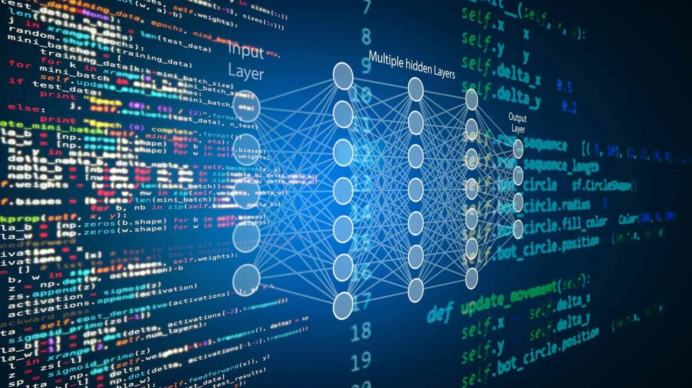

A era da economia digital traz grandes desafios. Um deles é a capacidade de explorar o potencial dos dados. Já não basta saber coletar e estruturar o Big Data, é preciso automatizar processos e tomar decisões cada vez mais ágeis e que impactem a vida das pessoas. Aqui, você vai aprender os conceitos e técnicas necessários para atuar nas diversas áreas que fazem parte do mundo dos dados, incluindo tópicos relacionados à análise e interpretação de dados. Por meio da combinação de conhecimentos como estatística, programação e Machine Learning, você vai identificar padrões e tendências, construir modelos preditivos e tomar decisões baseadas em dados, extraindo insights a partir de conjuntos de dados complexos. Para completar sua formação, você também vai coletar, limpar, transformar e integrar dados de diferentes fontes, analisando e visualizando esses dados de maneira eficaz. Tudo isso de forma prática e dinâmica, resolvendo casos reais do mundo corporativo, com foco na otimização do uso de recursos técnicos e humanos e no desenvolvimento da responsabilidade socioambiental.
Atuar na área de dados como Cientista de Dados, Engenheiro de Dados, Engenheiro Analítico, Arquiteto de Soluções, Analista de Dados, Analista de Governança de Dados, Analista de Business Intelligence e Inteligência Artificial.
Aprender conceitos como modelagem de dados (relacionais, dimensionais e estatísticos), linguagens de programação (SQL e Python), ferramentas de visualização de dados, ferramentas de análise e qualificação de dados. Também vai se aprofundar em: Cloud, NoSQL, Data Warehouse, Data Lake, Lake Warehouse, Big Data, Machine Learning, Deep Learning, Data Mining, Data Analytics, Data Viz, IA Generativas, Data Driven, Data Governance e LGPD.
Desenvolver habilidades de comunicação para apresentar suas descobertas e insights de forma clara e acessível para públicos não técnicos.